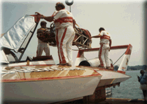

|
The SUPER FAN Pit Pass is tops for fans of racing vehicles. This gets you into the Unlimited Hydroplane Launch Area for ALL days of the event. No other ticket allows access to this section of the Dodge pits. Only the crew can get closer to a boat! The SUPER FAN pass is limited in availability, so order early.
![[Photo of the Cooper Team]](b_coop1.gif)

All contents Copyright © 1997 Spirit of Detroit THUNDERFEST, except where noted.
Web page created by Brian Reed.
|